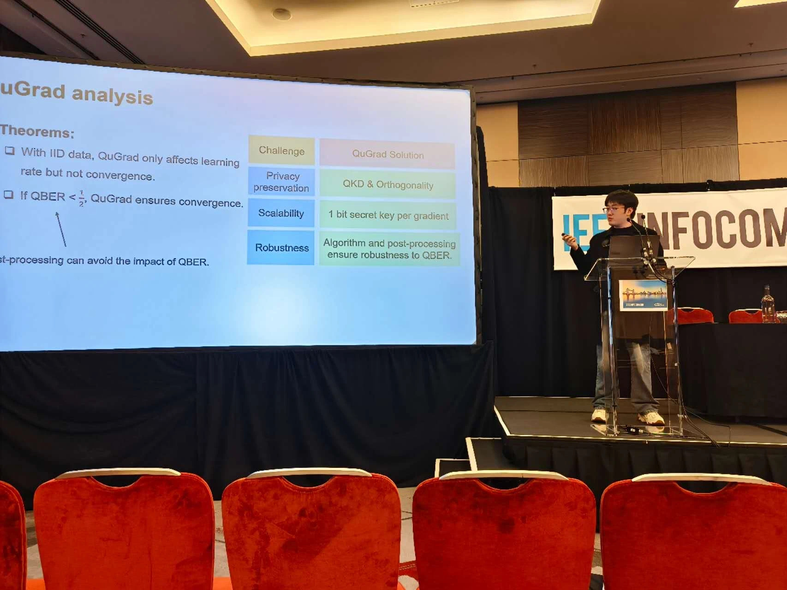
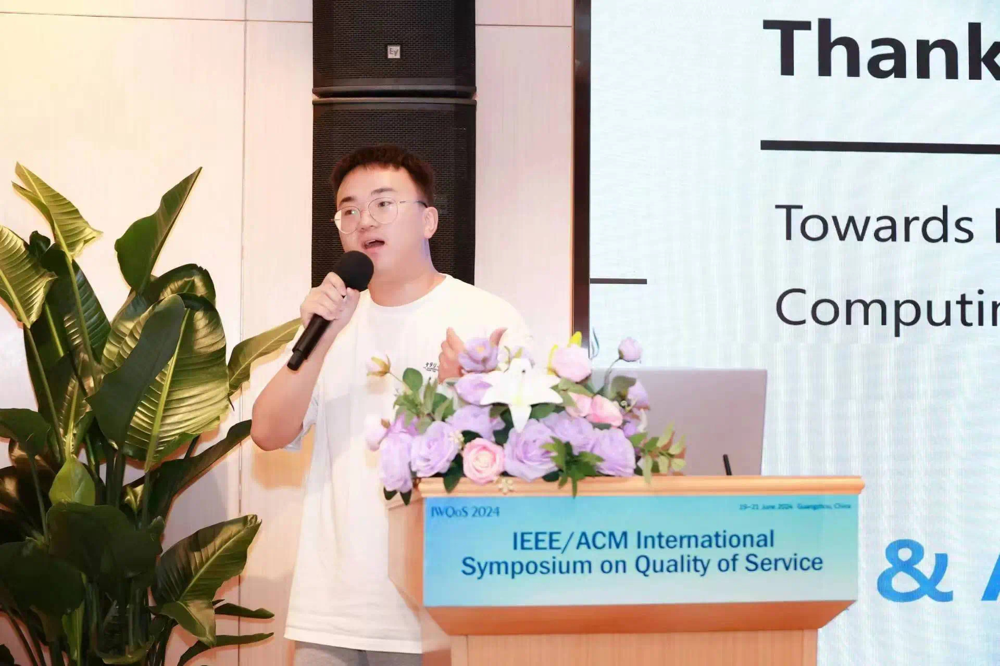
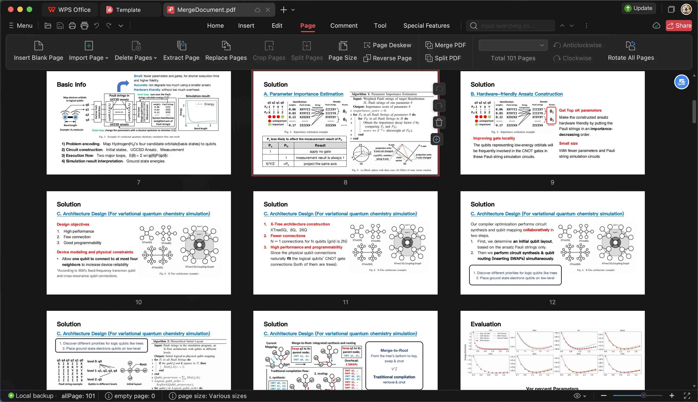

赵阳明
南京大学 博士，副教授，博士生导师。
2015年于电子科技大学获得博士学位，博士期间曾先后在纽约州立大学布法罗分校以及香港科技大学进行访问学习。博士毕业后先后供职于上海贝尔股份有限公司、纽约州立大学布法罗分校、以及中国科学技术大学。入选中科院人才计划B类（青年项目）以及安徽省海外引才计划创新项目。主要研究方向为量子信息技术、网络通信技术。主持多项科研项目，包括国家自然科学基金面上项目、江苏省自然科学基金面上项目、安徽省自然科学基金面上项目等。发表高水平论文80余篇，包括TON、TPDS、TC、TMC、INFOCOM、NSDI等国际一流期刊与会议。
研究方向
量子网络数据传输与应用技术通过设计高速可靠的量子通信协议和高效的量子算法，为量子传感、量子传输、量子计算和量子加密等领域提供强有力的技术支持，最终实现量子优越性。该技术的研究不仅推动了量子信息科学的发展，也为未来的量子互联网奠定了基础。
量子网络的应用广泛且潜力巨大，包括：
量子传感：提高测量精度和灵敏度。
量子传输：实现信息的安全、高效传输。
量子计算：增强计算能力，解决传统计算机无法处理的问题。
量子加密：提供安全的数据传输，保护信息隐私。
招生信息
课题组每年招收硕士2-5名，博士2名，欢迎加入我们的大家庭。你可以:
兴趣驱动：对本课题组研究方向有浓厚的兴趣，致力于在相关方向开展有创新性的研究与应用探索。
技术驱动：掌握通用数学建模、实验环境搭建和数据处理能力、良好的英文读写技能等。目前课题组在相关方向已有积淀，可更好支持新成员的快速和系统掌握这些技术和方法。
自由驱动: 给与学生充分自由思考和发挥的空间，每一个故事都离不开导师与学生的“双向奔赴”。
兴趣驱动：对本课题组研究方向有浓厚的兴趣，致力于在相关方向开展有创新性的研究与应用探索。
技术驱动：掌握通用数学建模、实验环境搭建和数据处理能力、良好的英文读写技能等。目前课题组在相关方向已有积淀，可更好支持新成员的快速和系统掌握这些技术和方法。
自由驱动: 给与学生充分自由思考和发挥的空间，每一个故事都离不开导师与学生的“双向奔赴”。
本课题组致力于打造一个开放宽松理念下追求卓越和高品质科研创新的文化，寻觅意义，愉悦生活，向光而行！
部分科研论文
* 更多相关论文可以访问Google Scholar
教学课程
课题组建设

INFOCOM 2025 · 王肖宇同学

IWQoS 2024 · 湛馥榕同学

量子计算 · 相关论文分享
联系方式
邮箱：ymzhao@nju.edu.cn
地址：苏州市太湖大道1520号
办公地址：南雍楼西230
邮编：215163
各位敢于不断从零开始的人。
爱唱反调，
讨厌合拍的人。
各位不懂得随大流，
不看规则的眼色，
能投入新世界，
重塑自我的人。
各位睁眼白日梦，
闭眼天马行空，
满脑子理想和幻想的人。
各位能在一片草地里， 分辨出万千种绿色的人。
能为现实的死结，
寻求答案的人。
你能飞得比自己想象的更高，更远。
你，就是我们寻找的人。